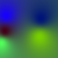
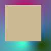

Pixmaps are data structures that contain pictures. These pictures
can be used in various places, but most visibly as icons on the
X-Windows desktop, or as cursors. A bitmap is a 2-color pixmap.
To use pixmaps in GTK, you must first build a GDK.Pixmap object
using GDK.Pixmap.
The pixels in a GTK.Pixmap cannot be manipulated by the application
after creation, since under the X Window system the pixel data is
stored on the X server and so is not available to the client
application. If you want to create graphical images which can be
manipulated by the application, look at W(Image).
GTK.Pixmap( GDK.Pixmap( Image.Image(100,100)->test()) )

GTK.Pixmap( GDK.Pixmap( Image.Image(100,100)->test()), GDK.Bitmap(Image.Image(100,100,255,255,255)->box(10,10,80,80, 0,0,0) ))

 GTK.Paned()->set_position()
GTK.Paned()->set_position()